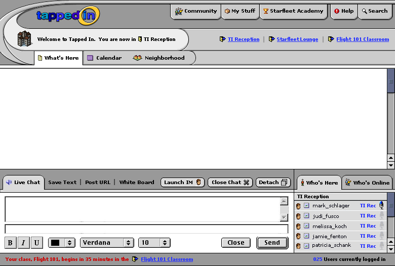

I see you separated the Search and Help buttons from the other buttons at the top of the screen...I like that. I also like the idea that the user will be able to link directly to the host organization/classroom. As a helpdesk volunteer it has sometimes been difficult to get people to where they need to be.
I wanted to implement some changes based on the meetings as well as begin working on a storyboard sequence of screens. Most of this work is for my benefit as I refine subtle elements like icons and layout- I think we basically agree now on the UI overall.
This screen would be the second in the storyboard sequence: the first screen after logging in. The scenario goes something like this: New user logs in because she has enrolled in a course (Flight 101) as part of a client University (Starleet Academy). She is automatically a part of this group and has bookmarks set for her class. Someone greets her in TI Reception and takes her through the steps of creating her own "place" and how to view her "neighborhood". As far as the discussion on neighborhood- I think a map can still work. The standard locations, like TI Reception and other fixed landmarks (like libraries or permanent resources and spaces) could exist in a non-dynamic map space, but friends' offices and classes and personal groups would be customized (dynamic). I think we can make the neighborhood maps look modular with the idea of them being "puzzle pieces". I would hate to lose the visual language of these icon-places. See most of you tomorrow!
